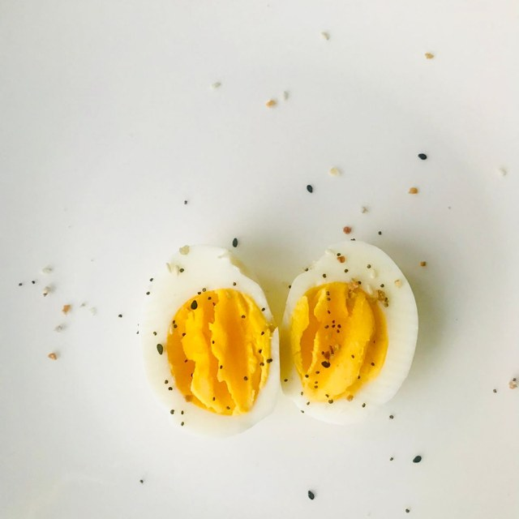

deepavali sweets
laddu!
+ a little
normal!
good news ✦
+0.37 kg
avg. holiday-season weight gain
Yanovski et al., NEJM 2000
!!
good choices…

protein first
Mysore pak, adhirasam, laddu this Deepavali —
eat it all, then start the diet after,
RIGHT?
If that's your mindset,
don't
SKIP THIS
Whatever the festival,
even fit people gain a little weight after it.
That's
NORMAL
The good news? According to a study,
after the festival, participants gained only about
400 GRAMS
of fat.
But what do most people do?
The moment the scale goes up, they panic
and drop all the good lifestyle choices they'd made.
To avoid that,
cut down your
TREAT CHOICES
Don't grab every sweet you see —
put your
PROTEIN FIRST
It keeps you fuller for longer.
After a big meal, take a
10–15 MIN WALK
It brings your cravings down.
And most importantly,
don't stress over these small fluctuations.
Get
BACK ON TRACK
A festival is just one day,
but its effect can last for months.
For more health tips like this,
follow me,
and share this with the friend who's already wondering
what to do about their diet this Deepavali.
SHARE IT
Follow for more fitness tips@ron_tamil
FollowingFollow